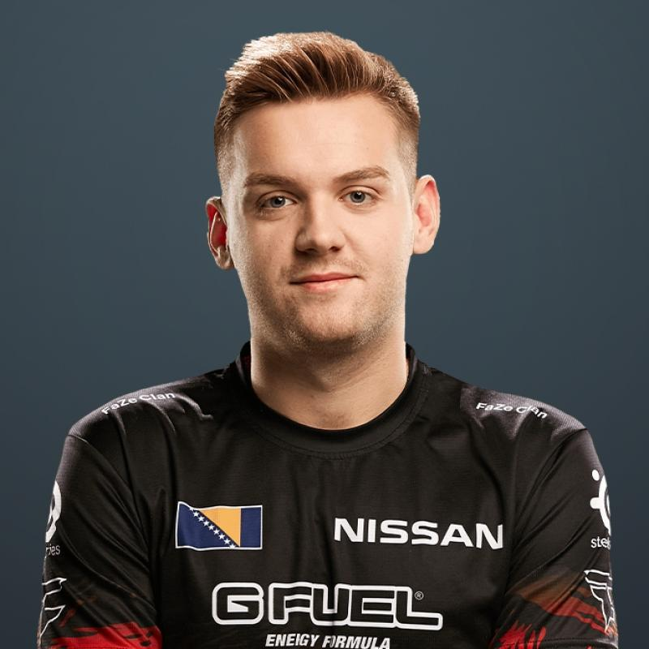

Spis treści
Opis
Nikola „ NiKo ” Kovač (urodzony 16 lutego 1997) to bośniacki profesjonalny gracz Counter-Strike: Global Offensive i były zawodnik Counter-Strike , który obecnie pełni rolę lidera i Entry Fraggera dla FaZe Clan.NiKo jest powszechnie uważany za jednego z najbardziej uzdolnionych mechanicznie graczy w CS: GO, walczył o tytuł najlepszego gracza na świecie w wielu okresach swojej kariery, najczęściej przeciwko Ukraiński graczowi s1mple .
Informacje
- Imie: Nikola Kovač
- Data urodzenia: 16.02.1997
- Kraj pochodzenia: Bośnia
- Drużyna: FaZe Clan
- Rola: Rifler
Historia
2012-??-?? – 2013-01-?? iNation
2013-01-?? – 2013-03-08 e-Sports.rs
2013-03-08 – 2013-08-31 iNation
2013-08-31 – 2013-11-06 Team Refuse
2013-11-06 – 2013-12-16 iNation
2013-12-16 – 2014-03-21 GamePub
2014-08-21 – 2015-01-12 aimface
2015-01-11 – 2015-03-04 iNation
2015-03-04 – 2015-05-04 mousesports
2015-08-30 – 2017-02-19 mousesports
2017-02-19 – Teraz FaZe Clan
| Mouse Settings | ||||||
|---|---|---|---|---|---|---|
| Mouse | eDPI | DPI | Polling Rate | Sensitivity | Zoom | Raw Input |
| ZOWIE S1 |
630 | 400 | 1000 Hz | 1.55 | 0.9 | On |